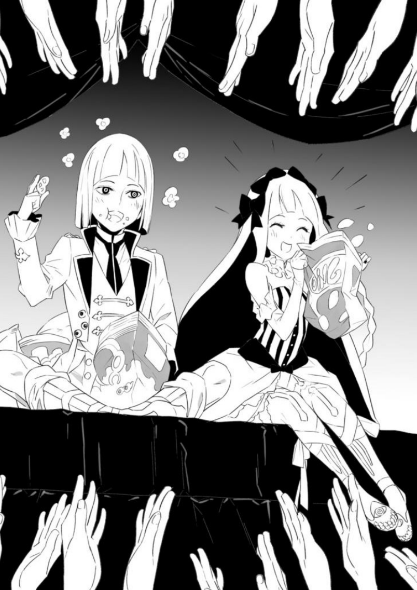

O Banquete dos Astros (Parte 2)
No escuro.
O tempo retrocede até logo depois de Saber ser preso e fazer seu discurso diante das câmeras de TV.
"Cara, aquilo foi hilário!" A lembrança de um Espírito Heroico sendo levado pela polícia fez Francesca cair em crise após crise de riso até desabar no centro da cama, enxugando as lágrimas dos olhos. Por fim, ela se ergueu até ficar de joelhos, cruzou as pernas e levantou uma mão.
"Muito bem, já está na hora de eu fazer minha parte como a mente por trás de tudo!" Ela estalou os dedos, e as velas ao redor se acenderam. A luz fraca e vacilante iluminou o centro do quarto.
Ela revelou um círculo mágico no chão diante da cama luxuosa, idêntico aos que os outros Mestres tinham usado para invocar seus Espíritos Heroicos. Só havia um detalhe que o diferenciava do ritual adequado: a cama de dossel ocupava o lugar onde deveria estar o altar.
Então, brincando com um biscoito que tinha tirado sabe-se lá de onde, Francesca começou um canto ritmado, quase infantil.
"♪Uma pitada de prata e uma pitada de ferro♪
"♪Ferva o chefe dos escribas♪
"♪Essa é a adorável receita de Até♪"
Aquilo passava longe de ser um encantamento de invocação para um Espírito Heroico. Soava como se Francesca estivesse zombando da própria Guerra do Santo Graal. Se alguém a ouvisse, ou explodiria de raiva, ou riria dizendo que jamais conseguiria invocar qualquer coisa daquele jeito.
"♪Encha, encha, encha, encha, encha até a borda♪
"♪Encha, encha, encha até transbordar♪
"♪Reúna cinco feridas fechadas♪"
O canto absurdo que saía ritmadamente de seus lábios lembrava ironicamente o que certo
maníaco homicida certa vez usara, numa Guerra do Santo Graal "verdadeira", para invocar sua "melhor amiga".
Ainda restavam vagas na lista de Espíritos Heroicos; ela não estava tentando forçar o Graal a manifestar um extra. Era verdade que um encantamento daqueles não deveria ter a menor chance de dar certo... mas Francesca nem sequer havia terminado antes de o círculo mágico começar a brilhar.
"♪Ofereço-lhe meu corpo, ofereço-lhe o meu—♪
"Ha ha! Ahaha! ♪O tempo acabou, então vou pular o resto...♪"
Ela não havia colocado um desejo poderoso em seu chamado como o lobo prateado, nem havia vencido a distância com uma interferência mística genial como Flat Escardos. Ainda assim, sua invocação tinha dado certo.
Havia apenas uma razão para isso: a afinidade do Espírito Heroico com o "catalisador" que ela usara para chamá-lo era extremamente alta. E esse catalisador, entronizado sobre o altar — a cama — era a própria Francesca.
A luz do círculo de invocação enfraqueceu, e ali estava um garoto. Ele aparentava ter mais ou menos a mesma idade de Francesca. Seu cabelo lustroso estava aparado com perfeição. Seu rosto teria sido bonito, não fosse algo indefinivelmente doentio em seus olhos.
No instante seguinte, o espaço sombrio onde antes estava o círculo de invocação se transformou num campo de flores até onde a vista alcançava. No centro dele, o garoto Espírito Heroico fez uma reverência exageradamente solene e estranha sem olhar para o rosto de Francesca. Em seguida escancarou os braços e gritou:
"Ha ha! Minha nova Mestre deve ser uma grande excêntrica para me invocar! Muito bem! Não sei o que espera de mim, mas não vou decepcioná-la! Vou elevá-la—"
"'Ao céu com um sonho de êxtase, e depois derrubá-la até o inferno com um pesadelo abrasador e sedutor!' Acertei?" chamou a sorridente Francesca, sentada no centro da cama.
"Hm? Oh? O que é isso?" murmurou o Espírito Heroico, confuso. As palavras que Francesca lhe dirigira eram exatamente as que ele estava prestes a dizer.
"E, depois de dizer isso, você transforma todas essas flores em braços de crianças humanas!" "Hm? Hmm... Será que você já me invocou antes? Se foi isso, estou chocado que ainda esteja viva. Invocar-me duas vezes... seus miolos devem estar—" começou o garoto. Então percebeu quem a maga diante dele realmente era.
"O quê? Não. Sem chance. Sério?" "Sério. Até que ponto vão suas memórias de 'quando você estava vivo'?" "Elas vão até a primeira vez que fui executado... Mas, mais importante, o que você está aprontando?"
"Uma Guerra do Santo Graal. Claro, eu já mexi tanto nas entranhas dela que nem eu consigo dizer se ela é real ou falsa!"
Enquanto ouvia a explicação de Francesca, uma expressão de prazer foi se espalhando pelo rosto do Espírito Heroico em forma de garoto. Por fim, ele explodiu numa gargalhada selvagem. Enquanto ria, o campo inteiro de flores se transformou em braços de crianças brotando do chão. Mãos vizinhas se juntavam aos pares, batendo palmas umas contra as outras, como se cercassem o menino e a menina com uma rodada de aplausos deformados.
"V-v-você é maluca!?" gritou o garoto Espírito Heroico, ainda rindo e segurando a barriga. "Com certeza é! Hehe... Hahahaha! P-p-por que você faria uma coisa dessas!? Você enlouqueceu! Hahahaha!"
O garoto se contorcia, gargalhando como um louco. Girou, saltou sobre a cama de Francesca, sentou-se ao lado dela e abriu um dos sacos de petiscos espalhados pelo colchão. Então esfregou o ombro no dela com intimidade e começou a beliscar o conteúdo do pacote.
"Ahaha! Eu me invocando! Que piada horrível! Mmm... Ei, isso aqui é delicioso. É assim que são os petiscos modernos? Que era incrível!"
"Não é? Enfim, eu fui o catalisador. Eu tinha noventa por cento de certeza de que sairia 'eu', embora tenha torcido para que, só por via das dúvidas, talvez aparecesse o Gilles!"
"Ah, qual é; o Gilles nunca apareceria numa Guerra do Santo Graal!" "Na verdade, apareceu sim! Gilles! Eu só pude observar de longe graças aos descendentes daquele domador de insetos de Kiev, mas ele realmente estava lá! Ele estava no trono, sabia? Gilles!"
"Isso é incrível! Qual era a classe dele? Saber? Rider?" "Não. Caster." "Como assim!? Quero dizer, Gilles como Caster? Ah, por minha causa! Hahaha!"

Quando os dois terminaram de se divertir com uma conversa que só eles conseguiam entender, o rosto de Francesca de repente ficou sério.
"Então é isso", disse ela ao Espírito Heroico sentado ao seu lado. "Eu estou falando sério... Decidi acelerar o cronograma e realizar nesta cidade uma Guerra do Santo Graal que eu possa manipular à vontade! E meti nisso todo tipo de gente e de país!"
"Então por que você não invocou o Gilles? Quer dizer, embora eu suponha que fosse difícil sobreviver a uma Guerra do Santo Graal com ele."
Francesca respondeu à pergunta óbvia balançando levemente a cabeça. "Bem, depois a gente conversa com calma sobre isso. Antes, precisamos selar o nosso contrato inicial!"
"Ah, é mesmo! Tinha escapado completamente da minha cabeça! Já que estamos falando nisso, se você conseguir o Graal, para que vai usá-lo? Claro, eu praticamente consigo adivinhar."
"Tenho quase certeza de que você adivinhou certo." "Entendo. De fato, você precisaria de algo no nível de um Graal para capturar aquele labirinto." O garoto saltou da cama, foi até o centro do círculo de invocação e então se virou para Francesca, fazendo uma reverência respeitosa.
"Pergunto-lhe: você é a princesa arrogante e tola que deseja me escravizar em sua busca pelo Santo Graal — ou por prazeres e pesadelos sem fim?"
"Sou! Com certeza!" Um coro de gritos agonizantes ecoou de debaixo do chão, e os braços de crianças que cresciam ao redor deles pegaram fogo. Num piscar de olhos, viraram esqueletos esbranquiçados. Então se desfizeram em cinzas. As cinzas redemoinharam na escuridão, e o Espírito Heroico declarou em alta voz que o contrato estava formado.
"Contemplem! O juramento foi selado!" O garoto abriu os braços em meio à poeira e cantou seu nome a plenos pulmões:
"Meu nome é Francois Prelati!"
Então, com um sorriso inocente, prosseguiu com a fórmula do contrato. "Como Servo leal da minha Mestre, Francois — ops, agora você está num corpo de garota — Francesca Prelati, juro arriscar minha vida para guiá-la ao Santo Graal!"
"Eu também juro — arriscar minha alma para vencer a Guerra do Santo Graal de forma justa, para que você possa obter o Santo Graal em glória legítima!"
Então os sorrisos do menino e da menina se tornaram travessos. Francois e Francesca continuaram em perfeito uníssono.
"'Brincadeira!'"
Ao mesmo tempo. Snowfield. Debaixo de uma usina termelétrica.
Mais ou menos na mesma hora em que Francesca estava se invocando em algum lugar da cidade, Haruri, uma maga especializada em bruxaria que vinha tentando invocar o verdadeiro Berserker, estava morrendo debaixo de uma das várias usinas termelétricas de Snowfield.
Como foi que isso acabou assim mesmo...? Ao ver a cor do sangue no canto dos próprios olhos vidrados, ela concluiu que morreria em breve. Magia de cura era uma de suas especialidades, mas sua energia mágica estava quase esgotada.
Ela tinha certeza de que seus preparativos para invocar Berserker haviam sido perfeitos. Também tinha certeza de que a invocação de fato dera certo. O problema era que o Berserker que havia invocado enlouquecera antes que ela tivesse a chance de firmar um contrato. Ela recebera o impacto total de um dos seus golpes.
Ainda assim, acho que estou... satisfeita. Ele parece mais forte... do que eu esperava... Ela conseguia ver vagamente o Espírito Heroico que havia invocado. Sua aparência era bizarra. Parecia andar pelo aposento sobre quatro patas. Cada passo produzia ruídos mecânicos ásperos. Uma luz incandescente brilhava em seus olhos. Os gemidos que vez por outra escapavam dele soavam distorcidos, como um disco tocado com uma agulha enferrujada.
Eu derramei bastante da minha energia mágica em você... e você deve conseguir uma fonte alternativa de energia desta usina... Então, vai poder enlouquecer à vontade...
Haruri não conseguiu conter um sorriso amargo ao observar a "coisa" coberta de ferrugem se aproximando. Embora eu aposto que você odeie usar a energia que seu rival, Nicola Tesla, criou. Ah... talvez seja por isso... que você perdeu o controle...
"Aquilo" estava bem diante dela agora. O grotesco Espírito Heroico parecia nada menos que um robô inspirado numa aranha de quatro patas ou num leão monstruoso.
Mas que estranho... Mesmo como Berserker... eu esperava que ele parecesse mais... humano. Será que a influência de Mazda tem algo a ver com isso...?
Eu sabia que devia tê-lo invocado como Caster e não deixar a Francesca ficar com isso... Já era tarde demais para arrependimentos. Haruri, porém, não temia a morte. Ela se especializava em bruxaria,
mas sempre usava o próprio sangue como meio sacrificial.
Ela havia até desenhado seu círculo de invocação com o próprio sangue. Precisou derramar uma quantidade perigosamente próxima do limite, mas levou o tempo necessário, às vezes fazendo em si mesma transfusões com as bolsas de sangue que havia preparado previamente para esse fim e usando magia de cura para estimular a formação de sangue.
Se a coisa que ela tinha invocado como resultado ia matá-la, então era até aí que ela podia ir. Haruri sorriu em desdém para si mesma e estendeu lentamente a mão em direção ao Espírito Heroico.
"Tudo bem... eu vou me sacrificar... para você..." Ela tinha apenas um desejo para o Graal: vingança contra a "sociedade mágica" que havia tirado tudo do seu povo. Não importava se fosse a Torre do Relógio, o Instituto Atlas ou mesmo os vários círculos mágicos não autorizados espalhados pelo globo. Ela simplesmente sentia que nada poderia ser mais irônico do que arruiná-los por meio de maquinaria, indústria ou qualquer outra "energia" avassaladora e distante da magia.
Talvez eu mereça isso... por tentar usar o Graal para algo tão mesquinho... "Vamos, me mate. Em troca... continue vivendo como quiser, enquanto existir. Mostre ao mundo inteiro o que você é. Torne inútil o sigilo deles..."
Haruri colocou o resto da própria força de vontade na declaração. Depois de dizê-la, já não importava em que momento seria morta. Resolveu esperar o golpe do Espírito Heroico. O que de fato desceu sobre ela, porém, foi a voz de uma mulher desconhecida.
"Você tem um jeito esquisito de lutar até o fim."
Haruri abriu instintivamente os olhos, que estavam cerrados com força. Diante dela estava uma mulher de beleza estonteante, de pele anormalmente branca.
U-um homúnculo Einzbern!? Ela ouvira dizer que havia um na cidade e supusera que estivesse atrás de uma vaga de Mestre. Ainda assim, jamais esperara que aparecesse ali. Tinha certeza de que o local da própria invocação era completamente secreto.
Eu realmente devo estar pagando pelos meus pecados... Sempre tive o cuidado de usar apenas a mim mesma como sacrifício, mas, depois que cheguei aqui, não me importei com o que aconteceria aos moradores da cidade... e isso tornou minha magia impura.
Ela decidiu que, se seria morta de qualquer jeito, não fazia muita diferença se seria pelo homúnculo Einzbern ou pelo Espírito Heroico. Então notou algo estranho.
"...O quê?" Seus ferimentos estavam se fechando. Sua visão estava clareando.
"C-c-como? Mas eu..." Ela não se lembrava de ter lançado um feitiço de cura. Para começo de conversa, sua energia mágica estava se esgotando, então não teria conseguido mesmo que quisesse. Haruri ficou perplexa, e o que a "mulher branca" disse em seguida a deixou ainda mais confusa.
Ela se voltou para o Berserker ao lado e se dirigiu a ele como se fosse seu cachorro de estimação. "Vamos. Aquela garota é sua Mestre. Agora ande e firme um contrato." O que diabos...? A dor recuou e a confusão tomou o lugar dela na mente de Haruri. Ela ainda não havia firmado um contrato, mas os direitos de Mestre ainda eram seus. Ela mal teve tempo de pensar que nenhum Berserker obedeceria a uma maga que nem sequer tinha Selos de Comando, porém, antes que outra de suas certezas ruísse.
"Pro... PRRRRRRR-ro-ro-ro... Prote... te-te-teTTTT." Berserker fez o que a "mulher branca" ordenou e baixou a cabeça em sinal de obediência diante da caída Haruri.
"Bom menino. Isso. Vou ligar seus meridianos aos dela para você." No instante seguinte, o fluxo de energia mágica os ligou, e as sensações do Espírito Heroico chegaram até Haruri através de seus Selos de Comando. Foi então que ela percebeu — o Berserker que havia invocado tinha medo da "mulher branca".
"Q-quem... é você...?" "Ainda assim", continuou a "mulher branca", ignorando a pergunta de Haruri, "você teve sorte de haver justamente aqui um 'recipiente' tão fácil de ocupar."
Ela encarou as próprias mãos e pés e então assentiu, aparentemente impressionada. Em seguida, voltou-se para a Haruri de expressão aturdida e estendeu devagar a mão para tocar sua bochecha.
Foi então que Haruri percebeu. Percebeu que o "poder" que fluía para dentro dela pela mão da mulher não pertencia a este mundo.
Im-impossível... Isso é... Mas ela nem sequer é um Espírito Heroico...! Não; mesmo para um Espírito Heroico, um "poder" tão concentrado assim é...!
A "mulher branca" — ou, mais precisamente, a coisa dentro da "mulher branca" — deve ter sentido o medo de Haruri.
"Não se preocupe", sorriu ela com confiança. "Eu talvez não pareça, mas gosto dos humanos." Havia calor nessas palavras, mas elas pareciam vir de uma altura tão grande que nada disso alcançava Haruri.
"Agora que eu estou aqui, vou governar vocês direito!" Nesse momento, a boneca mecânica que deveria ser o Servo de Haruri soltou um rugido, como se estivesse demonstrando aprovação. Como se estivesse louvando a "mulher branca".
"███████████████████████████████RRRRrrrRRR—!"
O quê? Haruri havia sido libertada do medo da morte, mas outro medo ocupara seu lugar. Ela ainda não sabia o quão terrível era a coisa que havia se instalado no homúnculo Einzbern devido à influência do catalisador que ela preparara.
Assim, todas as peças do jogo estavam reunidas. No palco de Snowfield, cada um deles era espectador, cada um deles era crítico e cada um deles era performer.
Com exceção de um garoto que ainda não havia dado o salto do interlúdio para o palco. Um garoto a quem o Graal ainda não havia atribuído um papel.